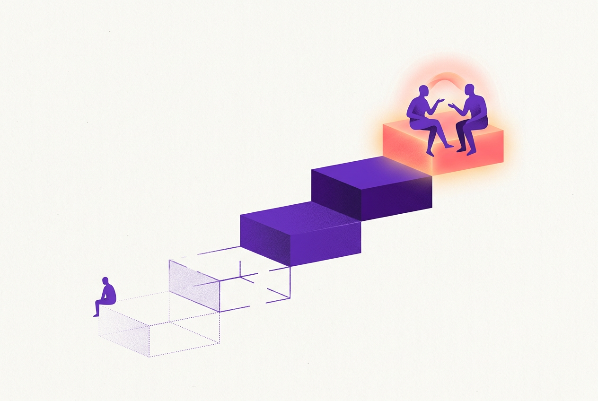
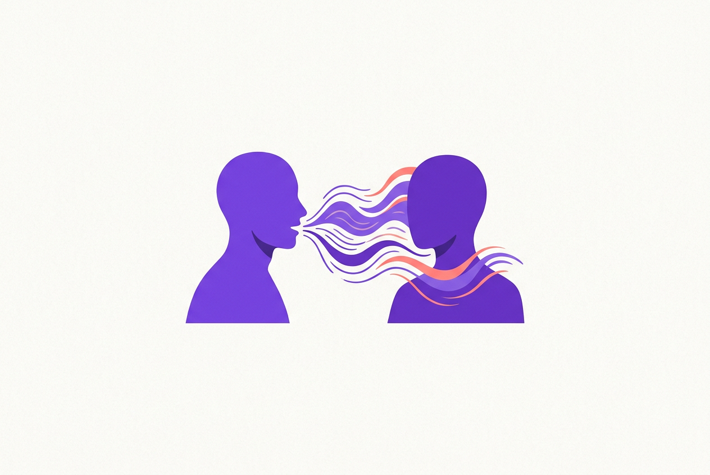

⚠️ 免责声明：本章为心理学通识科普，仅供心理健康教育与参考，不构成心理咨询、诊断或治疗建议，不能替代精神科医师与执业心理咨询师的专业判断。如你或身边人处于心理危机，请立即拨打 12356 心理援助热线或前往医院精神心理科；遇到家庭暴力请拨打 12338 或 110。各节观点均标注权威来源，以来源原文为准。
本章目标（约25分钟）：学完你能——①说出为什么"听"比"说"更决定沟通质量与关系深度；②用五个层次给自己的倾听水平定位；③识别自己的头号倾听障碍（排练、过滤、抢答）；④完整操作反映式倾听三步：复述内容→命名情绪→请求确认；⑤区分开放式与封闭式问题，问出让人愿意继续说的话；⑥用身体语言传递"我在听"；⑦掌握"先共情后建议"的回应顺序，接住别人的倾诉；⑧处理三种高难度倾听场景，并知道自己的倾听边界在哪里。
怎么用本章：本章只有两个需要背的东西：反映式倾听三步句式（第四节）和共情回应模板（第七节）。其余是帮你理解"为什么这样做有效"。建议先做第二节的自定位，找到自己的惯用障碍，再针对性练第四节——倾听是本章之后所有内容（NVC、伴侣、职场）的接收端，接收端不通，表达端再好也白搭。
一、被低估的一半：听，才是沟通的瓶颈
人人都想学"怎么把话说漂亮"，很少人意识到：多数沟通失败死在接收端
时间账本：我们听得最多，却练得最少
沟通研究对日常语言活动做过时间分配估算，流传最广的一组结论是：普通人在清醒的沟通时间里，约 45% 用于听、30% 用于说、16% 用于读、9% 用于写——倾听是占比最高的语言活动，却是教育体系中训练最少的一项：我们从小学写作文、练演讲，几乎没有一门课教"怎么听"。投入与重要性的倒挂，正是"最被低估"的含义。
更扎心的是研究里另一个数字：未经训练的人，听完一段话后通常只能记住其中的一半左右，两天后剩下的更少；而多数人在别人说话时，实际"在听"的时间比例更低——剩下的时间在走神、在评判、在准备自己的下一句。换句话说：你以为的对话，常常是两个人轮流对着自己的念头说话。沟通失败的大部分现场——误解、"你根本没听懂我"、越说越气——拆开看都是接收端事故。
被听见是一种心理需求：倾听在关系里的真实作用
为什么"你从来不听我说"能登上伴侣吵架高频台词榜？因为被认真倾听满足的是人对"被看见、被重视"的核心需要——人本主义心理学家 Carl Rogers 在 1950 年代就提出：当一个人被充分倾听时，ta 紧绷的内在世界会开始松动，"被听见"本身就有疗愈性。Rogers 与 Farson 1957 年提出的"主动倾听"（active listening）概念，至今仍是心理咨询与一切深度沟通的技术地基。
现代研究进一步支持：伴侣间"感知到被理解"（perceived partner responsiveness）是关系满意度最稳定的预测因子之一；医患沟通研究中，医生的倾听质量直接影响患者的信任与依从；职场里，被上级认真听过的员工，敬业度与心理安全感显著更高。结论很直白：倾听不是沟通的被动环节，而是一种主动给出的关系投资——它传递的信息是"你值得我放下自己的议程，花时间理解你的世界"。
倾听≠沉默：它是全程在线的主动工作
需要立刻澄清一个误解：倾听不是"闭嘴等对方说完"。人在场、魂不在场的沉默，对方是能感觉到的——眼神飘忽、"嗯嗯"敷衍、答非所问，都在广播"我没在听"。倾听是一项同时运转四个进程的主动工作：①接收（听清字面内容）；②理解（跟上逻辑与含义，包括没直说的部分）；③记忆（记住要点以便回应）；④反馈（用语言与身体信号让对方知道前三项在发生）。四个进程都开着，才叫"在听"。
这也解释了倾听为什么累：它占用的认知资源不比说话少，还要压住自己插话的冲动。所以本章第八节会专门讲倾听的边界——不是任何时刻都欠别人一场全神贯注的倾听，疲惫、忙碌、话题超载时，诚实地预约时间（"这事重要，我现在脑子不够用，晚饭后我们好好聊行吗"）比假装在听体面得多。
二、倾听的五个层次：先给自己定位
从"听而不闻"到"同理心倾听"——大多数冲突，是两个人各自停在不同的层次上
五个层次的阶梯
| 层次 | 状态 | 对方的体验 |
|---|
| ① 听而不闻 | 物理在场，完全没接收（想自己的事） | "我在对空气说话" |
| ② 假装在听 | "嗯嗯""对对"，内容一个字没进 | 被敷衍，比不听更伤人 |
| ③ 选择性倾听 | 只听感兴趣/不同意的部分，其余自动过滤 | "你只听你想听的" |
| ④ 专注倾听 | 完整接收内容与逻辑，能准确复述 | 被尊重，信息传达成功 |
| ⑤ 同理心倾听 | 在④之上，进入对方的参照系，听到内容背后的感受与需要 | "被看见了"——信任与亲密在此发生 |

插画 · AI 生成 — 倾听的五个层次：从"物理在场"到"进入对方的世界"
这个阶梯（源自 Stephen Covey《高效能人士的七个习惯》的"知彼解己"章节，属商业书籍框架，但层次划分与传播学、咨询心理学的通行分类一致）的价值在于指出：④和⑤是两种不同的能力。专注倾听解决"信息准确"，同理心倾听解决"情感连接"。工作指令、技术讨论主要需要④；伴侣倾诉、朋友诉苦、亲子沟通需要⑤——而大多数事故，是对方在⑤频道发射，你在④频道接收：ta 说"我最近好累"，你回"那你把工作分我点/那你早点睡"——信息层面无懈可击，情感层面完全落空。
同理心倾听的核心切换：从"我的参照系"到"ta 的参照系"
普通倾听是自传式回应：听到什么都自动翻译成自己的经验——"你这算什么，我当年更惨""你该这么办，我就是这样过来的"。同理心倾听要求的切换是：暂时放下自己的经历、判断和解法，站到对方的位置上，用 ta 的眼睛看这件事。判断标准很简单：你的回应让对方"更愿意继续说"还是"把话咽了回去"？
Rogers 把这种状态称为"仿佛"品质（as-if quality）：像对方一样感受ta的感受，但保持"仿佛"的清醒——不失去自己的边界，不把ta的问题变成自己的情绪灾难（这一点在第16章"共情疲劳"有专门讨论，助人职业与高共情者必读）。同理心倾听不是天赋性格，是可训练的操作：第四节给出完整三步。
三、三大倾听障碍：排练、过滤、抢答
先诊断自己：你的注意力在对方说话时，通常溜去了哪里
障碍一：边听边排练——你不是在听，是在候场
最常见的失败模式：对方话音未落，你的回应已经在脑子里写好了第三版——反驳的措辞、自己的类似经历、准备好的建议。认知资源被"排练"占用，接收带宽所剩无几，结果往往是：你精彩地回答了一个对方没有问的问题。排练的深层动机通常是自我证明（"我要说出聪明的话"）或防御（"我得提前准备好不被驳倒"），两者都把对话变成了各自的独角戏。
解药有两个。①信任延迟：相信"等对方说完再想也来得及"——人类语速约每分钟一两百字，你的思维速度是它的数倍，完全有余量；真正的好回应往往出现在对方说完之后的两秒沉默里，而不是排练中。②任务替换：排练冲动一冒出来，就给自己换一个占用同样通道的任务——"复述 ta 刚才最后一句话的意思"（这正是第四节技术的由来：它不只是给对方反馈，更是给自己的注意力拴一根绳）。
障碍二：选择性过滤——你听到的是自己预期听到的
大脑处理听觉信息时会走捷径：符合预期的内容被放大，不符合的被衰减。心理学称之为确认偏误在听觉通道的体现——如果你认定"ta 又在找茬"，同一句"今晚吃什么"都能被听出火药味；如果你认定"孩子就是不省心"，孩子的解释会被自动归类为借口。过滤的原料是成见与情绪状态：对一个人的既有标签，决定你从 ta 的话里"听"到什么。
第3章的知识在这里直接复用：过滤强度与生理唤起成正比——气头上的人几乎只能听到敌意（敌意归因偏差），焦虑的人只能听到坏消息。所以深度倾听的前提是先完成自我降温。日常解药是"核对"：养成用第四节句式确认的习惯（"你意思是……我理解对吗？"），核对动作本身就是对过滤器的一次质检；另一个习惯是刻意收集反例：那个"总是找茬"的人，上一次善意表达是什么时候？——标签松动，过滤才会松动。
障碍三：急于抢答——建议给得越快，对话死得越快
"抢答"指对方话没说完就打断给判断、给方案、给纠正："你这就是想太多""早跟你说了吧""你应该直接……"。抢答者的自我叙事通常是善意的（"我在帮 ta 解决问题"），但接收端的体验是三层伤害：①被打断=你的话不重要；②给方案=我不信任你有能力自己处理；③"早跟你说了"=你的痛苦是我预判正确的证据。倾诉者在最需要被听见时得到了被教育，下次就不来了——这是关系里"ta 越来越不跟我说心里话"的最常见成因。
抢答冲动的根源是对沉默和他人痛苦的不耐受：看到对方难受，我们急于做点什么来终止自己的不适——注意，那个"做点什么"首先安抚的是我们自己。解药是一条铁律：建议是请求制，不是推送制。在对方没有明确或默示地寻求建议之前，你的任务是理解和陪伴；第七节会给出判断"ta 要共情还是要建议"的具体方法。
障碍四（时代新增）：手机在场——分心的第三个人
智能时代的倾听多了一个特殊障碍：手机哪怕只是放在桌上（扣着也算），都会降低对话质量。一系列被广泛引用的实验（如 Przybylski & Weinstein 2013）发现：谈话现场"看得见手机"的对照组，即使手机从未亮起、从未被碰过，参与者报告的对话亲密感与对方共情度也显著更低。机制是"预期分心"：手机的存在本身就在提示"随时可能有更重要的事进来"，双方都不自觉地降低投入深度。
实操规则简单粗暴且立竿见影：重要对话，手机离场——放包里、扣过来推远、最好拿到另一个房间；做不到物理隔离，至少把"拿起手机"设为红色警报（你一旦伸手，对方立刻就知道自己输了）。这同样适用于听孩子说话、听父母说话：他们对"你在不在听"的敏感度，比你想象的高一个数量级。
四、反映式倾听：一套可以照着做的三步操作
像镜子一样把对方的内容与情绪映照回去——本章的核心技术，值得逐字练习
三步操作：复述内容 → 命名情绪 → 请求确认
第一步，复述内容（paraphrase）：用自己的话（不是复读机式重复原句）说出你听到的要点——"所以你是说，方案本身他们没意见，卡住的是上线时间？"。功能有三：确认信息没跑偏；让对方知道你在认真听；给ta一个修正你的机会。第二步，命名情绪（reflect feeling）：把对方话语里（或语气、表情里）的情绪轻轻说出来——"听起来你挺委屈的""这事搁谁身上都会烦"。命名情绪是同理心的最小动作，第1章讲过"情绪标注"本身就能帮对方降温。第三步，请求确认：把话语权交回去——"我理解得对吗？""是这个意思吗？"确认让反映从"我猜你"变成"我们一起校准"，猜错了也不尴尬——被纠正恰恰说明你在努力理解。
反映式倾听万能句式：
"你的意思是……（内容复述），听起来你有点……（情绪命名），我理解得对吗？（请求确认）"
示例（朋友抱怨工作）：
对方："这个项目我加了三个星期的班，结果汇报的时候领导一个字没提我。"
你："你拼了三个星期，功劳却没被看见（内容），搁谁都会又失望又憋屈（情绪）……是这种感觉吗？（确认）"

插画 · AI 生成 — 反映式倾听：像镜子一样把内容与情绪映照回对方
新手注意：三步不必每次全套，日常对话中"内容+确认"或"情绪+确认"两件套已远超平均水平；情绪命名要试探性、留有余地（"听起来有点……？"），武断地"宣判"对方情绪（"你就是嫉妒"）会瞬间毁掉信任。
反映式倾听为什么有效：三重机制
机制一：被理解的确认。人最深的沟通需求不是"被说服"而是"被理解"；反映让对方亲眼看到"我的话在ta脑子里的样子"，这种确认感是信任的最短路径。机制二：帮对方整理自己。很多时候说话者自己也是边说边想、情绪搅着事实；一面清晰的"镜子"帮ta把内容归类、把情绪显影——大量心理咨询的起效因素研究支持：来访者"感到被理解"是最稳定的疗效预测因子之一，而反映正是制造这种感受的核心技术。机制三：给你自己降温与延迟。反映式倾听强制你把认知资源从"排练回应"切换到"理解对方"（第三节障碍一的解药），同时天然制造了回应前的缓冲——很多冲突就是在这个缓冲里失去燃料的。
附带红利：反映式倾听在谈判、医患、客服、管理场景中都有实证支持的效果提升——但请记住它的适用前提：对方处于"需要被理解"的状态。在对方明确要求快速给结论的场合（消防式工作汇报），机械反映反而低效——技术为关系服务，不是仪式。
练习方案：一周入门的刻意训练
倾听是典型的"知道≠做到"，需要刻意练习（练习科学的完整版在第20章）。一周方案：第1-2天，只做一件事——每天选一次真实对话，全程不插话、不建议，对方说完后只用万能句式反映一次；第3-4天，加"沉默耐受"——对方停顿后默数三秒再开口（多数"停顿"不是结束，是对方在组织更深的表达，三秒沉默常常换来更真实的话）；第5-6天，加"手机离场"——重要对话前主动收手机，并观察对方的反应（很多人会明显放松）；第7天，复盘——记录：这周哪次反映让对方"眼睛亮了一下"或"说得更多了"？哪次翻车了、为什么（武断命名情绪？复述变成了复读？）。
提醒两个常见翻车点：①别把反映变成鹦鹉学舌（逐字重复对方的话会显得敷衍甚至嘲讽，要用自己的话）；②别向对方宣布你在练技术（"我现在要对你进行反映式倾听"——关系的温度瞬间归零），直接做就好，做得多了，别人只会觉得你突然变温柔了。
五、提问的艺术：好问题让人愿意继续说
问题是倾听的方向盘：问什么、怎么问，决定对话开往深处还是原地熄火
开放式 vs 封闭式：先分清你手里是哪种工具
封闭式问题（能用"是/不是"或一个词回答："你吃饭了吗""方案通过了吗"）适合确认信息、推进流程；开放式问题（需要展开回答："这事后来怎么样了""你当时什么感觉"）适合打开话题、进入对方的世界。倾听场景的铁律：想让对话深入，用开放式；想核对事实，才用封闭式。大量"聊不下去"的现场，复盘都是同一句话：一方全程在用封闭式问题把天聊成审讯——"吃了吗""吃了""忙吗""还行"——三问三答，对话死亡。
开放式问题的三个好用起手式：①"怎么"型："这事是怎么发生的？""你打算怎么处理？"——邀请叙述过程；②"什么"型："你最担心的是什么？""如果顺利的话，会是什么样子？"——邀请澄清重点；③感受邀请型："当时你什么感觉？"——邀请进入情感层（关系对话的关键一跃）。慎用"为什么"型："你为什么这么做"在中文语境里极易被听成质问，同样的好奇心可以换成"是什么让你做了那个决定？"——信息量一样，防御度天差地别。
追问与沉默：深潜的两个推进器
追问是沿着对方的话往下潜："你说'又搞砸了'——这次是哪里不一样？""你提到你爸，他当时什么反应？"好追问的特征：①用对方自己的词（"又""搞砸"）当抓手，证明你真的在听；②一次只追一层，不连环逼问。沉默是被严重低估的倾听技术：对方说完一段后的两三秒安静，不是冷场，是空间——研究显示，对话中适度的沉默让说话者感到被允许深入，往往会主动补充最重要的那部分。害怕沉默而急着填话的人，亲手掐死了对方本来要说的下一句真话。
沉默的配套动作：保持眼神接触与放松的姿态（表示"我在等，不着急"），可以缓缓点头。如果沉默超过五秒且对方明显卡住，用最低成本的邀请接一下："嗯……""想说什么慢慢说"——然后把空间再交回去。
审讯式提问的四种变体：别让好奇心变成攻击性
同样带着"想了解"的动机，有些问法天然携带攻击性，需要点名规避：①诱导式（预设答案只等你认罪）："你是不是根本没用心？"——改造成："你觉得这次的准备过程里，哪部分你自己不满意？"②连环逼问式（不给回答的间隙）："去哪了？和谁？几点回的？为什么不接电话？"——每次只问一个，且先处理情绪再问事实。③反问式（形式是问题、内容是攻击）："你怎么连这个都不懂？"——这不是提问，是贬低，直接戒除。④审犯人式关心（用问题实施监控）："跟谁吃饭？男的女的？"——关心可以用陈述与自我暴露来给："有点好奇也有点担心，愿意跟我说说吗？"——把"是否回答"的选择权交给对方，关心才是关心。
一个自检标准：好问题让对方有选择权（可以答、可以浅答、可以拒绝）；坏问题让人只有"认罪"或"对抗"两个选项。提问的最高形态是邀请，不是提取。
六、全身倾听：身体在替你说话
对方判断"你有没有在听"，主要不靠你的话，靠你的身体
非语言信号：注意力的广播系统
倾听的大部分反馈其实走非语言通道：眼神接触（看对方脸部区域、自然移动，不是死盯）、身体朝向（躯干与脚尖转向对方=全神贯注的物理声明）、适度前倾（感兴趣的身体语法）、点头（节奏与对方语速匹配，"我在跟"）、面部表情的跟随（对方说到难过处，你的表情柔和下来——表情同步是共情的外显）、最小回应声（"嗯""哦？""后来呢"——中文对话的润滑剂）。这些信号合起来广播一个信息：我的全部系统正对着你。
反向清单同样重要——以下每个动作都在广播"我没在听/我不在乎"：眼神飘向手机或门口、身体后仰抱臂、面无表情、打断、看表、边做事边"你说我听着呢"（你确实听着，但对方收不到任何确认信号）。特别提醒"你说，我听着呢"这句高危台词：在对方需要确认的时刻，它约等于"别烦我"。
正确使用"55-38-7"：一个被滥用到变形的著名研究
你可能听过这个说法："沟通中 55% 靠肢体语言、38% 靠语气、只有 7% 靠内容"——然后被推论成"说什么根本不重要"。这里必须做一次正本清源：这个数字出自心理学家 Albert Mehrabian 1960 年代的实验，但实验条件极其特定：当言语内容与语气/表情相互矛盾时，听者判断说话者的情感态度更多依赖非语言线索。它从来不意味着"日常沟通 93% 靠非语言"——谈论一个方案、核对一组数据时，内容显然占绝对主导。Mehrabian 本人多次公开纠正过这种滥用。
对倾听者的正确启示是：当对方的话与语气矛盾时，相信语气。"我没事"配上回避的眼神和僵硬的声调=有事；"随便你"配上咬重的尾音=不随便。非语言通道承载的主要是情感信息——而情感恰恰是同理心倾听（第二节层次⑤）的收听频段。练"听话听音"：内容用耳朵，情绪用眼睛和直觉，两者打架时以情绪为准，然后用第四节的反映去核对（"你嘴上说没事，但我感觉你有点不高兴？"）。
七、共情回应：先接住情绪，再谈事情
别人向你倾诉时，回应的顺序决定一切——验证在前，建议在后
情绪验证：被研究反复支持的"第一回应"
情绪验证（emotional validation）：承认对方的感受是真实的、可以理解的——不需要你同意ta的观点或决定，只需要承认"ta 会有这种感受"这件事合理。"这事确实让人难受""换了我我也会气""你付出了那么多，委屈是正常的"。与之相对的是情绪否定（invalidation）："这有什么好哭的""你想太多了""别矫情"——否定不消除情绪，只是让情绪转入地下，并切断这条倾诉通道。
实证层面：伴侣研究中，感知到的情绪验证与关系满意度、冲突后修复速度正相关；临床研究中，验证性回应能降低来访者的情绪唤起与防御（辩证行为疗法 DBT 甚至把"验证"列为核心治疗技术之一）；日常层面，每个被"想开点"回应过的人都可以作证——那句"想开点"从没让任何人想开，只让人学会了闭嘴。验证的悖论：情绪被承认之后才会松动，被否认的情绪才会固守——"感受只有被听见，才会离开"。
判断 ta 要什么：共情模式还是解题模式
回应倾诉前的第一个任务是判断需求类型，方法按可靠性排序：①直接问（最可靠也最少人用）："你是想让我听你说说，还是想一起想想办法？"——这句话本身就是一种尊重，把选择权交给对方；②看信号：反复讲述细节与感受、语句循环=共情模式（ta 在消化情绪）；讲述卡点、问"怎么办"、语速变快=解题模式；③看时机：情绪高峰期（哭、抖、语无伦次）永远是共情模式，解题要等潮水退了再谈。
共情模式的标准回应序列（背下来）：验证 → 反映 → 陪伴。"这事确实太难受了（验证）……你觉得自己被最信任的人背叛了（反映），我在这儿，你想说多少说多少（陪伴）。"全程没有建议、没有"你应该"、没有自己的故事——注意最后这条："你这算什么，我那次……"是最常见的共情事故，把对方的舞台瞬间变成你的。你的经历可以在对方情绪平复后、且用于表达"我懂那种感觉"时简短使用，重心始终留在对方身上。
共情回应模板（示例）：
对方："我妈又拿我和表姐比，我受够了。"
❌ 抢答版："她就是那么个人，你别往心里去。"（否定+教育）
❌ 比惨版："你妈算好的，我妈天天……"（转移舞台）
✅ 共情版："又被比较了，而且比了这么多年（反映）——这种话听多了真的很挫败，也很委屈（验证）。这次她说什么了？（邀请继续）"
建议的正确给法：等被邀请，再递上
当对方进入解题模式（或明确征求建议），给建议也有姿势：①先许可再输出："我说说我的想法，你看看有没有用？"——建议被接受的概率与对方的心理准备度成正比；②给选项不给指令："我看可能有两条路，A 是……B 是……你觉得呢？"——指令剥夺自主感，选项保留决定权；③小步可行：给的第一步要小到"今晚就能做"，宏大建议（"你要建立边界"）等于没建议；④建议被拒绝时体面收场："行，你更了解自己的情况"——然后停止重复推送。反复给同一个未被采纳的建议，本质是在说"你不采纳=你错了"，关系会替你付账。
一个需要内化的心态：多数倾诉的目的不是获得答案，而是完成消化——答案 ta 往往早就有了，缺的是一个安全的消化场所。你的倾听就是那个场所。这听起来"没做什么"，但恰恰是关系里最稀缺的东西。
八、高难度倾听场景与倾听的边界
抱怨循环、观点对立、自己被点燃——以及你什么时候该"停止倾听"
场景一：反复抱怨同一件事的人
有人向你循环播放同一份痛苦（工作、婚姻、原生家庭），每次都声情并茂，但从不采取行动，你的共情储备在快速耗竭。心理机制：对ta而言，倾诉获得的关注与验证形成了负强化循环——痛苦被听见=痛苦有回报=无需改变。此时纯粹的反映式倾听反而在喂养循环。破法：验证照常给，出口温和推——"这事确实一直在折磨你（验证）。我注意到你已经讲了三个月了，我很心疼，也很想帮你真正走出来（关心）。你考虑过做点什么打破它吗？哪怕很小的一步（推向行动）？"——如果对方拒绝讨论行动、继续循环，你可以设立边界（第18章详述）："我愿意陪你，但我发现反复讲同一件事让我们都更累，或许找个专业咨询师聊聊会有不一样的角度？"——这不是抛弃，是把ta交给更有能力接住的人（第19章）。
场景二：听一个你强烈不同意的观点
对方的观点让你血压升高（育儿方式、消费观念、政治立场），倾听的第一冲动是立刻反驳。此时记住：理解不等于同意——这句话值得写下来贴在心里。倾听的目标不是"承认ta对"，而是"知道ta为什么这么想"：任何观点背后都有ta的经历、需要与恐惧（"你这么坚持让孩子学奥数，最担心的是什么？"）。神奇之处在于：被理解是改变的前提——说服研究的一致结论是，感到被倾听与被理解的人，防御下降，才有可能松动原有立场；而被驳倒感只会让立场加倍固化（逆火效应的日常版）。
操作要点：①用第四节的反映先复述对方观点到ta认可为止（"你的意思是……对吗？"——对方点头之前，你没有任何反驳的资格，因为你甚至不确定自己在反驳什么）；②表达自己时用"我"句式与个人经验（"我的经历让我的看法不太一样：……"），而不是宣判（"你这样想是错的"）；③分歧保留权：不是所有对话都要达成一致，"我们在这件事上看法不同，但我明白你为什么这么想"是完全合法且高质量的结局。
场景三：你自己被点燃时——先摘面罩，再帮别人
对方说的话戳中你的旧伤（ta 提到你刚离婚的姐姐、你去世的父亲、你自己的失败经历），情绪瞬间上头——此刻你已失去倾听能力，继续硬撑只会泄漏（走神、变脸、突然反驳）。处理顺序遵循飞机安全演示的逻辑：先给自己戴氧气面罩。当场三步：①识别（"我被点燃了，这是我的旧伤在响"）；②短暂离场或深呼吸降温（"不好意思，我去倒杯水"）；③回来后如果状态仍不适合倾听，诚实降级："你这件事很重要，但我现在的状态没法好好听，我们约明天聊好吗？"——诚实的延期永远好过虚假的在场。
长期功课：记下那些反复点燃你的话题——它们是通往你自己未处理议题的路标（"情绪按钮"清单），值得用第3章的工具自我处理，或在第19章讨论是否值得带入专业咨询。你的按钮越少，你能倾听的世界越大。
倾听的边界：你不是 therapist，也不必是
学了本章技术的人常犯一个新错误：把自己变成亲友的免费心理咨询师，24 小时待命接住所有人的痛苦。三个边界必须画清：①角色边界——朋友的价值在平等与互惠，长期单向倾倒会腐蚀关系；双重关系（既是家人又是"咨询师"）恰恰是专业伦理要回避的，因为亲密关系里无法保持中立。②能力边界——第19章的红旗信号（持续两周以上的情绪低落、绝望表达、自伤念头、明显功能受损）出现时，你的正确动作不是"更努力地倾听"，而是陪伴+转介："我听到了你的痛苦，我很在乎你，这件事需要更专业的人一起帮你，我陪你去好吗？"危机情况直接协助联系 12356 心理援助热线或医院精神心理科。③能量边界——共情是有成本的（第16章"共情疲劳"专节），你自己的睡眠、情绪、生活优先权不因为你"会听"而作废；疲惫时诚实地预约时间，好过耗竭后消失。
一句话总结本章的完整心法：倾听是给出注意力这份稀缺资源的方式——给得专注、给得有方法、也给得有边界。
谣言粉碎：关于倾听的四个流行误区
误区一："倾听就是同意对方。"——错。第七、八节反复论证：理解≠同意；先理解再表达分歧，恰恰是分歧能被讨论的前提。误区二："给建议越多，说明我越关心ta。"——错。未经邀请的建议是推送广告；关心的证明是接住情绪，建议是请求制（第三节障碍三）。误区三："55-38-7 定律证明说话内容不重要。"——错。Mehrabian 实验只适用于"内容与语气矛盾时的情感判断"，本人多次澄清；日常信息沟通中内容依然是主角（第六节）。误区四："会听的人天生就会，学不来。"——错。主动倾听自 Rogers & Farson 1957 年提出以来，一直是可教、可练、可测量的技能，心理咨询师的看家本领全部来自训练而非天赋（第四节练习方案）。
九、本章自测
能用大白话讲出来，才算真的学会了
📋 理解性自测（讲给朋友听试试）
- 日常沟通时间里听、说、读、写各占多少？为什么说倾听"占比最高、训练最少"？
- "被听见"满足的是什么心理需求？Rogers 的核心主张是什么？
- 倾听的四个并行进程是什么？为什么说倾听不比说话省力？
- 五个倾听层次分别是什么？④和⑤的本质区别是什么？
- 什么场景需要④、什么场景需要⑤？"我最近好累"被④频道接住是什么样的？
- 同理心倾听的"参照系切换"指什么？"仿佛"品质是什么？
- 三大倾听障碍各自的机制与解药是什么？
- 手机"只是放在桌上"为什么也会降低对话质量？
- 写出反映式倾听万能句式与三步各自的功能。
- 反映式倾听的三重起效机制是什么？
- 为什么情绪命名要用试探语气？鹦鹉学舌为什么是翻车点？
- 开放式与封闭式问题各适合什么场合？三个好用起手式是什么？
- "为什么"型提问为什么高危？怎么改造？
- 沉默三秒为什么常常换来更真实的话？
- 审讯式提问的四种变体是什么？好问题与坏问题的分界线是什么？
- 非语言倾听信号清单有哪些？"你说我听着呢"为什么是高危台词？
- 55-38-7 的原始实验条件是什么？它被滥用成了什么？正确启示是什么？
- 情绪验证与情绪否定的定义与后果？"感受只有被听见才会离开"是什么意思？
- 怎么判断对方要共情还是要解题？共情回应的三步序列是什么？
- 建议的正确给法四条是什么？为什么"多数倾诉不是要答案"？
- 面对循环抱怨者，"验证照常给、出口温和推"怎么操作？
- "理解不等于同意"为什么是跨分歧倾听的钥匙？
- 自己被点燃时的当场三步是什么？"情绪按钮清单"是干什么用的？
- 倾听的三种边界是什么？出现第19章红旗信号时你的正确动作是什么？
📌 本章要点速览：听占沟通时间约45%却几乎零训练——多数沟通失败死在接收端；倾听四进程：接收→理解→记忆→反馈；五层次定位：听而不闻→假装→选择性→专注→同理心，④管信息、⑤管连接；三障碍：排练（解药=信任延迟+复述拴绳）、过滤（解药=核对句式+收集反例）、抢答（解药=建议请求制）；手机在场即降质；反映式倾听三步：复述内容→命名情绪→请求确认；好问题=开放式+对方有选择权；身体广播注意力，话与语气矛盾时信语气；回应倾诉先验证后建议，"想让我听你说说，还是一起想办法？"；循环抱怨者：验证照常给、出口温和推；分歧对话：理解≠同意，反映到对方点头才有反驳资格；自己被点燃先戴氧气面罩；边界：你不是 therapist——红旗信号=陪伴+转介（12356）。